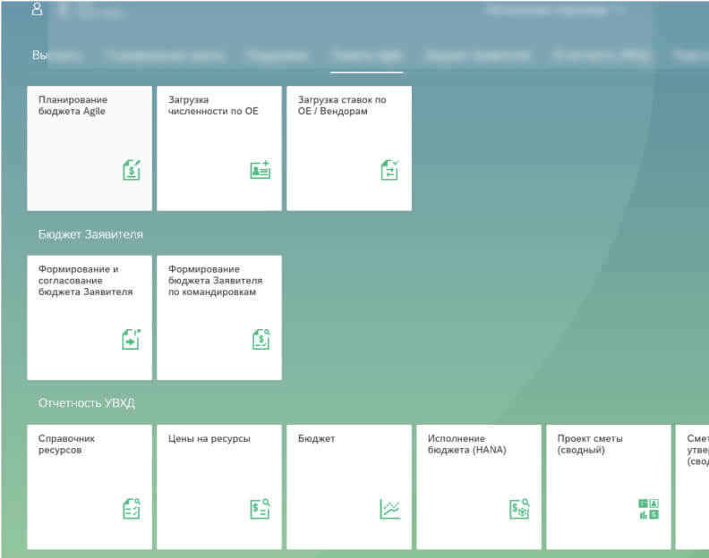
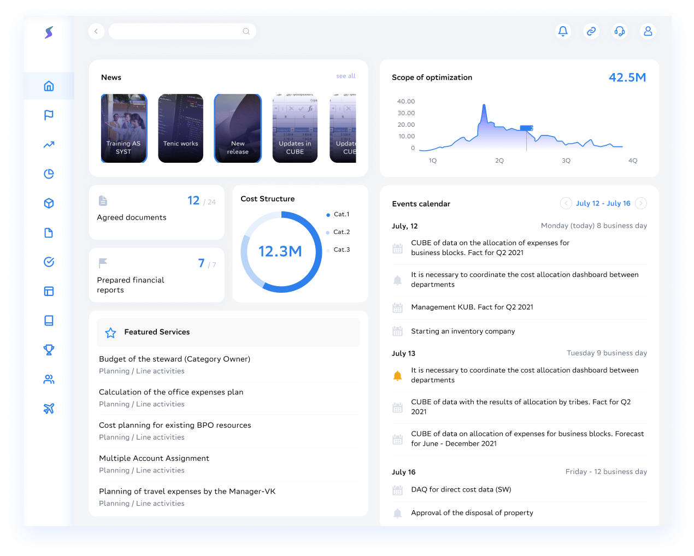

Cost Platform
PART 1: PLATFORM
Task:
Updating the financial platform Reasons: — transition to a new technology stack — the level of satisfaction with the interface (NPS TOP-2: 54% (target 80%) / BOT-2: 25% (target 5%)) and the convenience of working in the NPS system 54% over the past 4 years
Before
After
Background of the project
Background
Many different financial services
With different architecture
NPS + Feedback from users (every half year - surveys)
More than 2 thousand feedback messages in two years have been received and many were not satisfied with the old tiled interface because a lot of time is spent searching for the right service.
Transition to a modern technology stack
From UI5 (SAP) to ReactJS
Decision
Create one plafrom for all financial services